Histology and transcriptomic data provide complementary views of tissue biology through spatial morphology and molecular activity. Pathology foundation models (PFMs) encode rich tissue morphology, but strong downstream performance does not necessarily indicate that their representations capture robust biological information. We present a training-free framework for auditing biological alignment in frozen PFMs using spatially paired histology and transcriptomics from HEST-1k, evaluated on 240 samples spanning three organs. We use several frozen PFMs to obtain features from H&E images and group gene expression into meaningful biological pathways. TabPFN serves as a pretrained probe to measure how well these molecular programs can be decoded without task-specific gradient updates. We test whether pathway predictions remain reliable across different tissue sections, patient groups, and tissue types, and whether the models rely on shortcuts or small image changes. We further track prediction stability under context resampling as a sensitivity diagnostic. The resulting multi-tissue audit characterizes which molecular pathways are robustly represented, tissue-specific, or shortcut-sensitive, providing a systematic approach for evaluating trustworthy biological alignment in pathology foundation models.
Histology-to-expression models such as STNet, BLEEP, and mclSTExp, and molecularly supervised approaches such as TANGLE, SPADE, SEAL, and PathLUPI, all train task-specific components. When such a model predicts expression well, it is impossible to tell whether the biology was already present in the frozen representation or was learned by the downstream head. Separately, pathology encoders are known to pick up section, site, scanner, and batch cues — but those shortcut studies are usually run apart from molecular prediction.
We keep both the encoder and the probe frozen. TabPFN conditions on a labeled context at inference time, so nothing is fitted to the dataset: the resulting correlation is a property of the representation and the biology, not of an optimizer. That makes it possible to ask two questions with the same pipeline — what molecular programs are encoded, and which of them survive controls and distribution shift.
A training-free alignment audit. Spatially paired histology and transcriptomics are probed with TabPFN as a standardized pretrained probe rather than a task-specific predictor, so decodability measures the representation instead of the head.
A four-operator audit protocol. Gene- and pathway-level decodability is coupled with negative controls (label-shuffle, random-feature), distribution-shift evaluation, benign-perturbation stability, and a within-section shortcut test — all applied to the same frozen pipeline.
Evidence that decodability and trustworthiness diverge. Frozen pathology representations carry biologically patterned molecular signal that survives our controls, yet part of their apparent alignment is sensitive to distribution shift or driven by section-level structure: section identity is itself linearly decodable up to 214× chance.
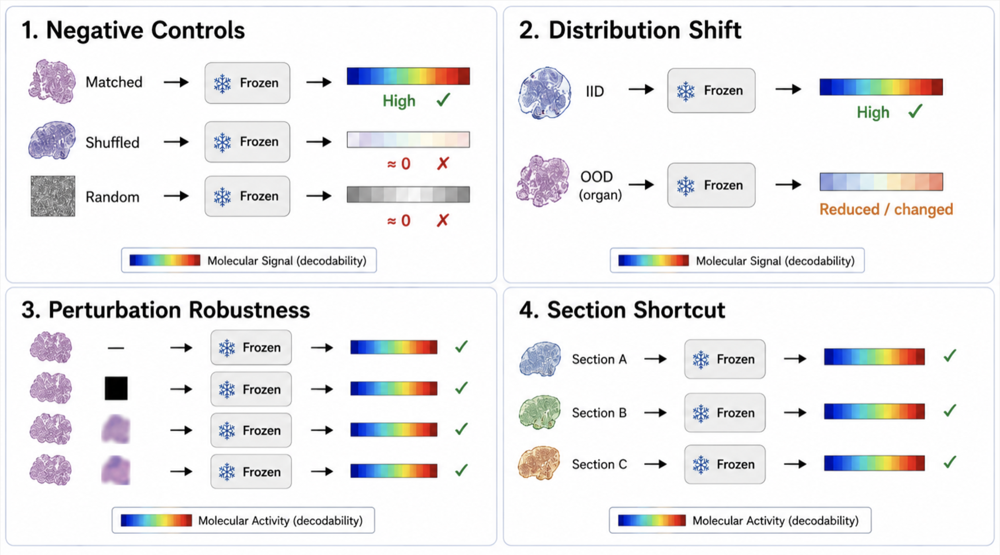
All four operators run on the same frozen pipeline. (1) Negative controls permute context labels or replace the encoder with random features. (2) Distribution shift draws context and queries from disjoint sections, cohorts, or organs. (3) Benign perturbations re-embed queries under stain and colour jitter, rotation, blur, and JPEG compression. (4) Shortcut probes fit a linear section-identity classifier and permute targets within a section. A representation is trustworthy only if decodability is high and survives all four.
The audit is inherently per-organ: every verdict compares an organ's matched decodability against its own within-section control, so an organ needs enough sections to estimate that control. We therefore run the definitive audit on the three data-rich organs of HEST-1k — Breast, Skin, and Brain (each n ≥ 37, 240 samples total, four spatial technologies). Regime membership is not assigned a priori: each organ is placed by its measured matched-vs-control contrast, and no organ is excluded.
Targets are the top-1000 highly variable genes per group and ssGSEA scores over Reactome + MSigDB Hallmark. Contexts of size K ∈ {8, 32, 128, 512} are drawn under random, section-balanced, diverse, and nearest-neighbour strategies, with five-fold specimen-level cross-validation over three seeds and grouped bootstrap confidence intervals. The primary encoder is UNI; the identical protocol is repeated with Phikon, Phikon-v2, a Lunit DINO ViT, and a CTransPath-style SimCLR ResNet to test whether the conclusions are encoder-specific.
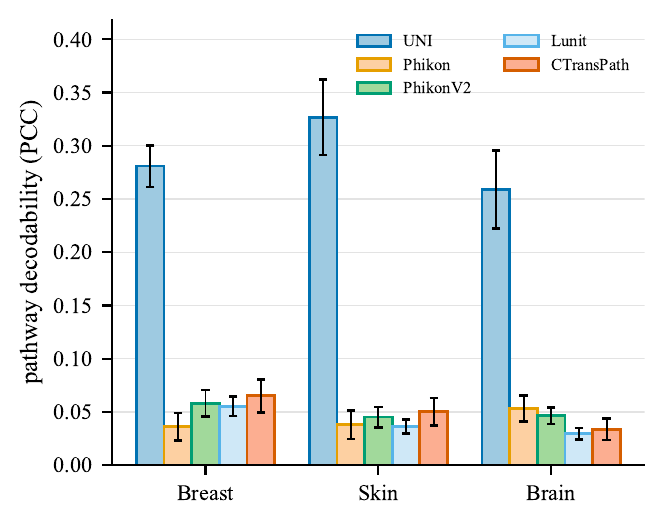
(a) Pathways
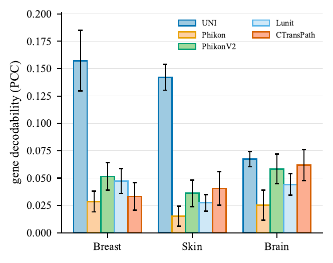
(b) Genes
Only the encoder changes, so the in-context probe ranks representations directly. Across all five encoders, matched decodability sits far above the label-shuffle and random-feature floors, so the recovered signal belongs to the representation rather than to the probe or the target marginals. Two structural patterns emerge: decodability is strongly tissue-dependent (structured epithelial organs — Breast, Skin — beat Brain), and pathway activity is more consistently recoverable than individual genes. Pathway decodability ranks UNI at 0.303 far above the four substitutes, which cluster near 0.054 with Lunit trailing at 0.044; UNI is significantly best in every organ×target cell (Mann–Whitney over per-target PCCs, Holm-corrected, all p < 10−5). UNI clears the shuffle floor by ~19× on pathways; the substitutes sit only ~3× above it. This is a ranking under a frozen, training-free probe, not an absolute ranking of pathology foundation models.
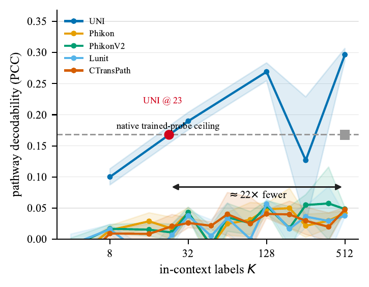
(a) Label efficiency
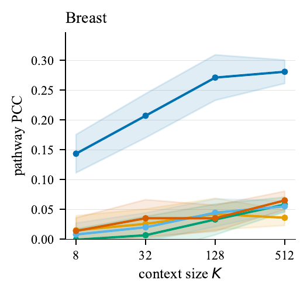
(b) Breast
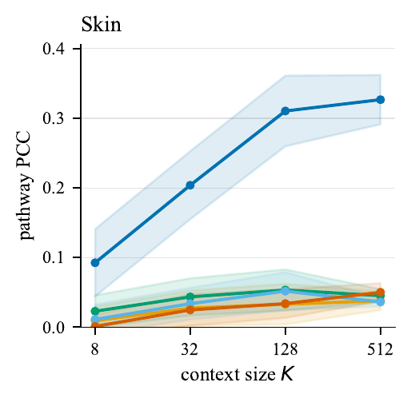
(c) Skin
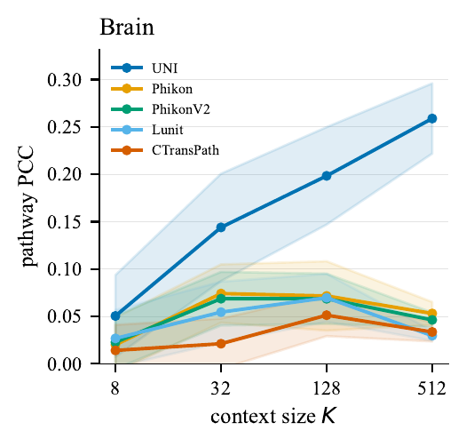
(d) Brain
Fixing the encoder to UNI and varying only the probe and the in-context budget, the training-free probe beats the gradient-trained MLP: TabPFN reaches pathway PCC 0.303 versus 0.161 for the MLP (p < 10−3, Holm), with kNN at 0.244 and Ridge at 0.141. It attains a PCC comparable to the reported HEST-1k trained-probe reference using roughly 23× fewer labeled context examples — a level the other frozen encoders never reach at any context size. For UNI, decodability rises with context size K; the substitute encoders stay flat.
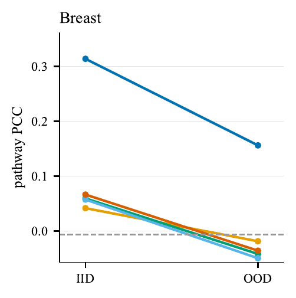
Breast
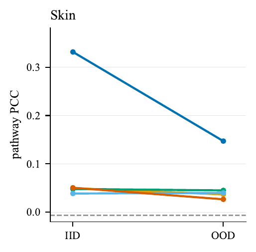
Skin
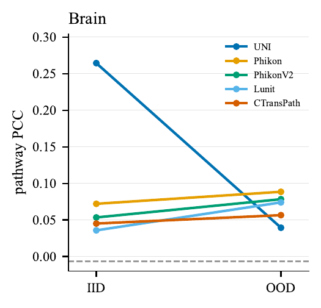
Brain
In-distribution pathway PCC 0.303 falls to 0.114 when the context is drawn from a held-out organ — a 62% decline. UNI retains roughly half its signal on Breast and Skin but collapses on Brain, while the substitute encoders have no signal to lose. Organ holdout is deliberately a stringent transfer bound rather than an invariance test, since genuine molecular programs differ across organs. Under benign perturbations the picture is better: geometric transforms (flip, 90° rotation) are effectively lossless (≥95% of the clean 0.294 PCC), and even heavy blur and strong colour jitter retain ~72%, with clean-vs-perturbed prediction agreement above 0.84 throughout. Meanwhile section identity is linearly decodable up to 214× chance on human Visium — a strong site-specific shortcut sitting in the same embedding.
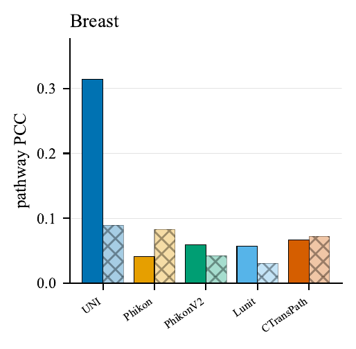
Breast
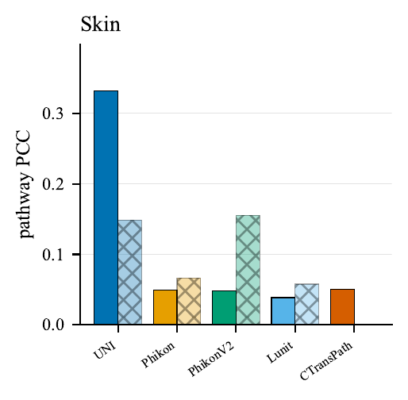
Skin
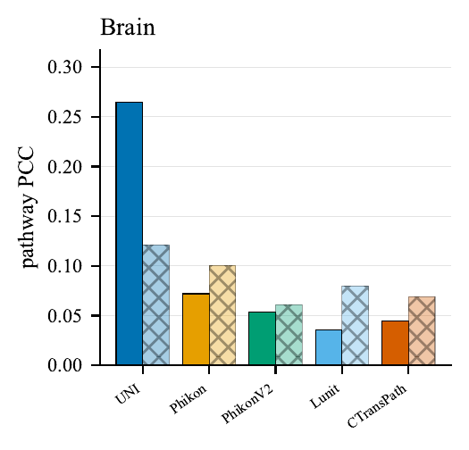
Brain
Matched decodability 0.303 collapses to 0.016 under label permutation and −0.006 under random features, ruling out target-marginal and probe-only explanations. The critical test is the within-section control, which removes the cross-section shortcut: under it UNI's pathway decodability drops to 0.120 but stays well above the shuffle floor — a nonzero residual beyond section identity. Because a single section supplies fewer spots, this control uses the largest feasible context (K = 256 versus 512 for the matched condition), so the gap mixes shortcut removal with reduced context and cannot be read as a clean effect size. For the substitute encoders the control meets or exceeds the matched score, marking their already-weak signal as section-driven.
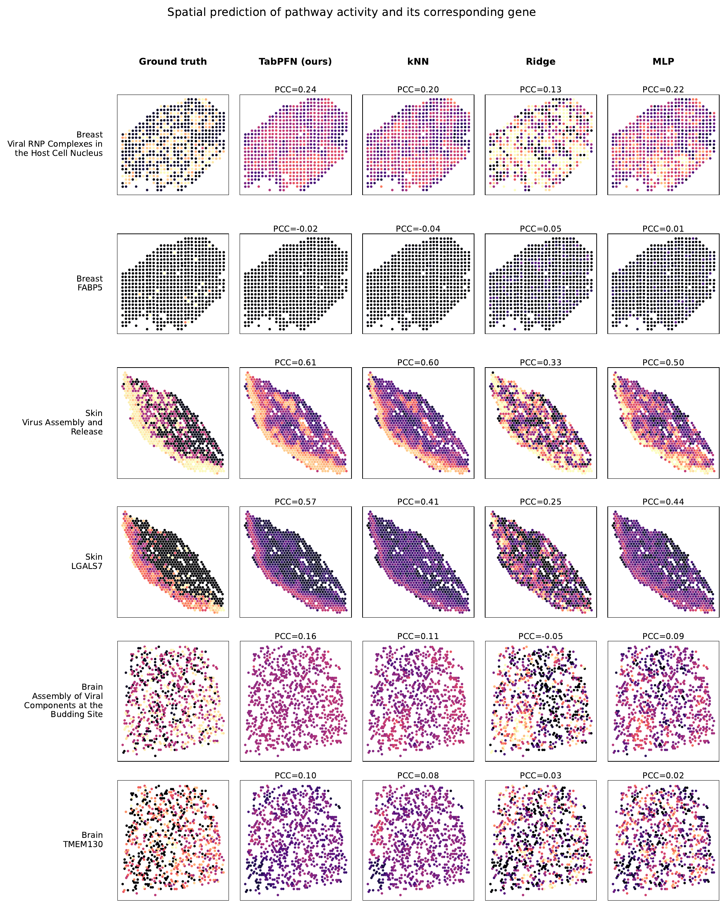
For one representative section per organ, the most-decodable Hallmark pathway is reconstructed over the whole section by each probe, all sharing the same frozen UNI features and K = 512 context. TabPFN reproduces the ground-truth spatial organization most faithfully; the pattern is clearest in structured tissue (Skin) and weakest in Brain, mirroring the quantitative trends. The strongest aggregate scores therefore correspond to coherent tissue-level patterns rather than isolated spot-wise agreement.
The signal is real. Matched decodability stays far above the label-shuffle (0.016) and random-feature (−0.006) floors, and predictions are stable across context reseeds.
It is biologically patterned. Pathway activity (0.303) is more consistently recoverable than individual-gene expression (0.135), and structured epithelial tissue decodes better than Brain.
It does not transport. Organ-level shift costs 62% of the pathway signal, and section identity remains linearly decodable at up to 214× chance.
So report a profile, not a number. Matched decodability, separation from negative controls, retention under shift, and the within-section residual together distinguish a merely predictive encoder from one whose molecular readout supports biological interpretation. Because the probe is standardized and gradient-free, the whole audit can be re-run as a routine diagnostic for a new pathology foundation model.
TabPFN is the primary probe family. Ridge, kNN, and MLP baselines show that the broad tissue and encoder trends are not unique to one head, but absolute PCC and especially label efficiency can remain probe-specific.
The within-section control is limited to K = 256 while the matched condition uses 512, so its lower PCC mixes shortcut removal with reduced context; we interpret only the residual above the shuffle floor and leave a matched-K ablation as follow-up.
Organ-OOD evaluates portability across biological domains, not invariance: organ-specific programs, differing gene panels, and technology composition all contribute to the drop. The definitive audit covers only Breast, Skin, and Brain, because these are the organs with enough sections to estimate the shortcut control.
HEST lacks harmonized scanner, stain, and site metadata, so the most deployment-relevant controlled shifts cannot be run here. Our label permutations also do not model spatial autocorrelation, and context-reseed stability is a sensitivity diagnostic rather than a calibrated uncertainty analysis.
Status: under review. This entry will be replaced with the arXiv record once the preprint is posted, and with the venue record on acceptance.
@unpublished{bhattacharjee2026trustworthy,
title = {Towards Trustworthy Biological Alignment in TabPFN-Probed
Pathology Foundation Models},
author = {Bhattacharjee, Ushashi and Das, Alloy and Hannan, Saria and
Roy, Tirtho and Howlader, Koushik and Sarkar, Soumik},
year = {2026},
note = {Under review}
}